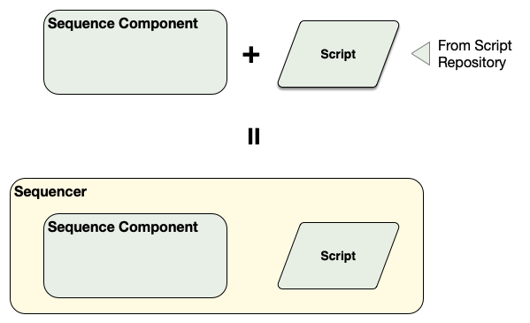
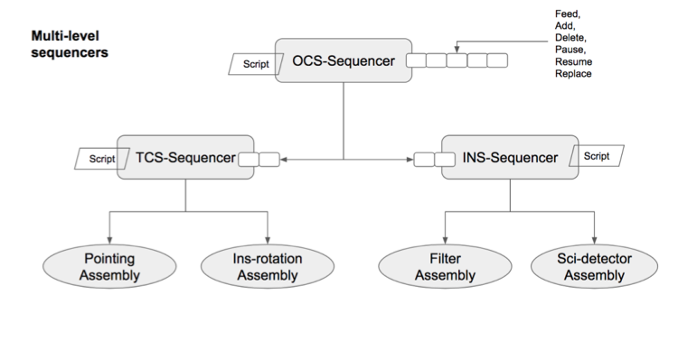

OCS Terms
What is a Sequence Component, Sequencer, Script, and Sequence?
This first section provides an overview of the critical OCS architectural ideas. Subsequent sections go into more depth.
ESW.OCS provides the Sequence Component, which is one of the OMOA architecture components (along with HCD, Assembly, Container, and Application). The Sequence Component is configured by loading a “script” that is written in the “script language”. A different script can be written and loaded into a Sequence Component depending on the observing mode in use. When combined with a specific script, the Sequence Component becomes a Sequencer (i.e., Sequence Component + Script = Sequencer). The Sequence Component provides the framework and a consistent environment for a Sequencer. Scripts are stored in a dedicated script repository in the TMT Github called sequencer-scripts. All scripts for all subsystems reside in the script repository.

A Sequence is defined in Common Software as a list of Sequence Commands: Setup, Observe, Wait. The only message type a Sequencer can receive and process is a Sequence, which can contain 1 or more Sequence Commands. Note that a Sequence with only 1 Sequence Command is still wrapped in a Sequence message.
There is one more term: Observing Block. The Observing Block is an SOSS type that is usually defined as the “smallest schedulable science entity”. The Observing Block describes the observation using high level terms, and may contain a sequence of exposures, such as dither patterns. A Sequence is created from the Observing Block, including acquisition and configuration steps, before it is sent to the OCS.
In the OMO architecture, the Sequencer does most of its work in a scripting environment. For OCS, “scripting” means that the code of the Script is easier to write and update without requiring installation of a new software version. This is unlike Assemblies, HCDs, and applications that are compiled programs. The reason for this is to support flexible Sequencer arrangements and Scripts that are minimal and can change based on the observing mode. Operations experience shows that the most frequent software changes will happen in the Sequencer level and changes to lower level devices (i.e., Assemblies and HCDs) are less frequent and more disruptive. It makes sense to make it easier to change the software that changes most frequently. The use of scripts also has the advantage of allowing for an interactive environment that can be used during engineering and acceptance testing.
A Sequencer is created with a Script that may be specific to an observing or maintenance mode. Once the Sequencer is created with the specific Script it is able to execute Sequences for that mode. The specific Sequence Commands that may appear in a Sequence as input to a specific Sequencer/Script is the API for the Sequencer mode as defined in the ICD for the Sequencer/Script.
Each Sequence Command in a Sequence is handled by the Script–usually one step at a time. The Script examines each input Sequence Command and takes whatever actions are needed to match the demands specified in the command. The Script actions taken may include involved activities that include sending commands to subsystem Assemblies and receiving events. The commands and events used by the executing Script are the commands defined by the Assemblies in their ICDs. The Sequence Command may trigger a mode or state machine that operates after the Sequence Command completes.
The Sequencers needed for an observing mode form a hierarchy. The OMOA allows any arrangement of Sequencers for an observing mode, but the construction agreement is that there will be one or more Sequencers for each of the major subsystems with Scripts written by each subsystem team. For a typical AO-dependent observation such as with IRIS and NFIRAOS the Sequencers would include: OCS (master sequencer), AOESW, TCS, and an instrument such as IRIS.
The following figure shows all of the key discussion points of the previous paragraphs. This figure shows a simplified construction Sequencer hierarchy with OCS Master Sequencer, TCS Sequencer, and an Instrument Sequencer arranged in a hierarchy. Each Sequencer has a loaded Script. The Master Sequencer has received a Sequence and in processing that Sequence. It has sent Sequences to the TCS and INS Sequencers.

Note that in this hierarchical arrangement, a Sequencer can send commands to Assemblies using CSW Command Service or, as with the OCS Master Sequencer, it can construct and send a Sequence within the Script. The point of this figure is to show that the OCS Master Sequencer may receive a long Sequence that it will process and will typically submit smaller Sequences of one or two Sequence Commands to sub-Sequencers and wait for completion before processing additional steps.